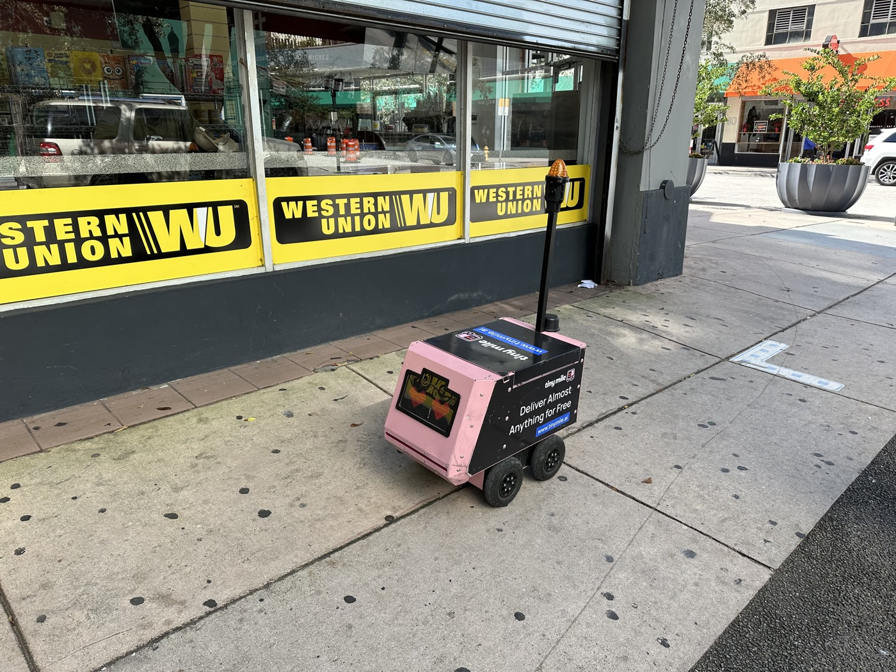

Executive Summary
This article looks at a study that collected robot navigation data without a robot. Sarvesh Prajapati, Ananya Trivedi, Lorena Maria Genua, Drake Moore and Taşkın Padır of the Institute for Experiential Robotics at Northeastern University, together with Bruce Maxwell of the same university's Khoury College of Computer Science, posted it to arXiv on September 17. They call it UNI, the Universal Navigation Interface, a way of gathering the data that teaches a wheeled robot to drive without ever running that robot.
The instrument is nothing more than a four-wheeled rollator walker anyone can buy, with a smartphone clamped to it. It cannot climb stairs, it cannot mount a curb that was never cut down, and it cannot fit through a gap narrower than itself. So the routes an operator picks narrow, on their own, to the ones a wheel can follow. Six operators covered 37.2 km over 87 sessions in three U.S. cities, and three navigation models retrained on that data cut their trajectory prediction error by 17.4 to 24.8%. The same adaptation did not pay off on every dataset. On one existing corpus performance went the other way, and the authors put that in the table as it stood.
Sections 1 through 4 follow the design and the numbers the paper reports, along with the limits its authors drew themselves. Section 5 reads that result as a question about what belongs in a dataset's documentation, and that reading belongs to this article.
Key Figures
Source: Prajapati, S. et al. (2026), arXiv:2609.20114v1
37.2 km
Distance collected without a robot
Six operators recorded it over 87 sessions in Boston, New York City and Worcester. That comes to 10.8 hours of recordings
$250
Cost of the collection rig
Smartphone excluded. Assembly takes about 30 minutes and uses no 3D-printed parts or custom-fabricated hardware
0
Stairs and uncut curbs traversed
Suspect stretches were narrowed down from inertial and depth signals, then reviewed on video. No traversal was confirmed
17.4–24.8%
Drop in trajectory prediction error
Measured on held-out UNI demonstrations after fine-tuning GNM, ViNT and NoMaD on this data
Robot Data Takes a Robot to Collect
More and more wheeled robots run on public sidewalks. Last-mile delivery, inspection and powered mobility are the standard examples. Learning navigation in those settings takes varied demonstrations recorded on the ground where the robot will work, and gathering those demonstrations is expensive in itself, because a robot platform has to be transported, maintained and supervised. The paper notes that this requirement limits how many locations and conditions an academic group can cover, and adds that data collected by commercial fleets may stay proprietary.

So the attempts to collect without the robot kept coming. One route straps a rig to a person and walks. MuSoHu and EgoWalk were gathered that way. Another is CityWalker, which traces camera motion through online walking and driving video to produce training signal without manual labeling. Both lift most of the burden of operating a robot. But CityWalker handles the scale ambiguity of its trajectories by normalizing them rather than recovering their original metric scale. Wherever meters are what the job needs, that difference stays.
The trouble sits in the routes people walk. A pedestrian route picks up stairs, curbs that were never cut down, and narrow gaps. A wheeled robot gets through none of them. One sentence in the paper is where the whole study starts. Filtering those routes afterward cannot recover the wheeled-feasible alternatives that were never demonstrated. Filtering takes out what is wrong. It does not create what is missing.
Manipulation ran into the same problem first. UMI collected demonstrations without a robot using a hand-held proxy gripper, while keeping the physical constraints that matter to the task. The idea spread from there to aerial manipulation and to contact-rich, tactile work. The question the authors pose carries that line over to navigation. Can one simple physical proxy enable robot-free collection while tilting human demonstrations toward routes a wheel can follow?
A $250 Rollator and an iPhone With LiDAR
The answer they built is plain. A commercial four-wheeled rollator walker, a standard phone mount, a smartphone. Assembly runs about 30 minutes, with no 3D-printed parts and no custom-fabricated hardware. Roughly $250 with the smartphone left out. The operator pushes the rig with all four wheels on the ground. Ramps and curb cuts get picked over stairs and uncut curbs, and a passage narrower than the frame is out of reach from the start.

What matters is that this constraint is an object rather than an instruction. Instructions can go unfollowed, and checking whether they were followed is hard. Earlier work already said as much. EgoWalk, gathered with a rig worn on the body, acknowledged that human demonstrations may include robot-infeasible maneuvers despite explicit collection guidelines, and MuSoHu named gait-induced motion and viewpoint mismatch as its limits. Four wheels at the foot of a staircase leave nothing to argue about. The diagram below marks where two routes across the same ground part company, one walked on foot and one walked behind a rollator.
2.1The Phone Records It All, and Its Own Pose Track Goes Unused
Recording falls to SensorVault, an iOS app the authors built. On a LiDAR-equipped iPhone it takes 1280×720 RGB video, 256×192 depth and confidence maps, and 6-DoF visual-inertial odometry poses, all at 30 frames per second, then adds 100 Hz inertial measurements, GPS and audio into a single file. Camera intrinsics and fixed focus are stored with each recording so that trajectories can be rebuilt later. Every session used one phone model, an iPhone 16 Pro.
The poses that app records are the one thing that never reaches training. A phone's visual-inertial odometry drifts or fails outright over a long recording. Checked across 10.8 hours of pose chunks, 34.9% produced motion no walking human could have made. One chunk in three. The authors keep those poses for reference and rule them out as the source of the released trajectories.
The trajectories get rebuilt from video instead. Depth Anything 3 sweeps 48-frame windows at 4 Hz, predicting per-frame depth and camera pose together within each window, and consecutive windows are chained through a 12-frame overlap. Up to that point the coordinates carry no unit, so real distance is unknown. The iPhone's LiDAR supplies it. For each chained segment the pipeline takes the ratio of LiDAR depth to predicted depth frame by frame and uses the median as one absolute scale. Joins where two windows' pose estimates disagree badly across the overlap get thrown out.
Segments without enough LiDAR depth behind them are rejected rather than assigned a forced scale. That drops 8.3% of candidate segments, most of them recordings that were never navigation to begin with, such as an occluded camera or the rollator being carried. Being unable to anchor a scale doubles as a quality gate.
Whether the resulting trajectories can be trusted was settled against data with ground truth. On TUM RGB-D, which carries indoor motion-capture ground truth, scale error fell from 7.67% to 3.14% and absolute trajectory error came to 0.0256 m. ORB-SLAM3 on the same material was slightly lower at 0.0197 m, but it reconstructed 64 of 65 windows where this method scored all 65. On KITTI, which moves at vehicle speed, scale error fell from 22.92% to 6.75% and absolute trajectory error from 2.483 m to 0.720 m. The authors also ran ORB-SLAM3 against 30 real UNI recordings. It estimated poses for 84.1% of frames and followed only 10 recordings end to end, yet where tracking ran cleanly the two trajectories agreed to within 1.8 to 2.8% of distance traveled.
The same anchoring was bolted onto other reconstruction models. VGGT reached similar accuracy, while DROID retained substantial scale error. Anchoring distance with LiDAR does not carry the job alone, and the quality of the step that recovers shape from video still decides the outcome.
The Study Audits Its Own Intended Bias
The collection rule is simple. Use curb cuts, ramps, lifts and passages wide enough for the rig. Through all 10.8 hours the operators held to it rather than carrying the device over stairs or uncut curbs. When an intended route was closed to the rollator, collection carried on along one that was open. The example the paper gives catches the character of the rule. A planned transit stop had no accessible way out, so the collector stayed on the train and got off at the next accessible station.

Here the study goes a step further. Setting the rule was not the end of it, because they then measured whether it held. They flagged suspect stair traversals from the stepping signature that inertial sensors leave behind, and suspect curb transitions by fitting a ground plane from depth and estimating step height. Each candidate that came out of that pass went back to the video. No traversal of stairs or uncut curbs was confirmed.
Counting the same stretches shows what kinds of scene this dataset holds. There are 169 crossing traversals, 49 lift rides and 1.28 km of travel over tactile paving. The lift rides span 19 sessions and the tactile paving 67. The surfaces are not uniform either. Concrete sidewalk, brick, asphalt, gravel, cobblestone, boardwalk, dirt, grass, sand, carpet, tile and terrazzo are all in there, wet pavement included.
The authors also drew a boundary around the bias they claim. These observations support the intended bias of the collection protocol, they write, while transfer to a particular robot additionally depends on that robot's footprint, ground clearance and allowable slope. The paths a rollator cannot take and the paths a given robot cannot take are not exactly the same set.
3.1They Kept the Stretches Where Nothing Moves
Another decision was not to delete. Because collection happened in public pedestrian environments, the recordings hold waiting at a signal, yielding to someone, stopping and setting off again. The paper classifies a window as near-stationary when its cumulative 2-D path length over five consecutive frame-to-frame steps falls below 0.25 m, and 8.14% of windows met that bar. Set against other datasets, the gap is wide. EgoWalk sits at 3.10% and SCAND at 0.25%, while the closest prior work, the Tartu/Milrem dataset, removes motion below 0.05 m/s in preprocessing altogether.
The table below is the comparison the paper drew itself. Wheeled in that table means a physical constraint present during collection, not an instruction or a post-hoc filter, and a partial mark means only part of the corpus came in under such a constraint.
| Dataset | Collection platform | Wheeled | Robot-free | Off-the-shelf | Stationary |
|---|---|---|---|---|---|
| SCAND | Teleoperated robots (wheeled and legged) | Partly | No | No | 0.25% |
| FrodoBots-2K | Teleoperated sidewalk robots | Yes | No | No | Not reported |
| EgoWalk | Human-worn stereo rig | No | Yes | No | 3.10% |
| CityWalker | Web walking and driving video | Partly | Yes | Yes | Not reported |
| Tartu/Milrem | Human-pushed golf trolley | Yes | Yes | No | Filtered out |
| UNI | Rollator and smartphone | Yes | Yes | Yes | 8.14% |
Source: arXiv:2609.20114v1 Table I. Tartu/Milrem removes motion below 0.05 m/s during preprocessing. That closest prior work also ran a purpose-built sensing rig, with a ZED 2i stereo camera, an Xsens GNSS/INS unit and three GoPro cameras. The original table carries one more column, recording what supervised each trajectory: wheel odometry; GPS and wheel telemetry; stereo-inertial odometry; normalized monocular visual odometry; visual odometry with GPS; and, for UNI alone, depth-anchored metric trajectories.
The Error Falls, But Not on Every Dataset
The models trained on this data are three visual navigation models that read a goal image and mark the next waypoints. For GNM, ViNT and NoMaD alike, three conditions were set side by side: the released checkpoint as it comes, fine-tuning on this data, and training from random initialization on this data alone. Evaluation ran on seven outings held out of training, with identical observation windows and goals, and five predicted waypoints per window.
For all three, fine-tuning came out ahead of training from scratch on this data alone. For GNM the gap was small. Adding to what a model already knows beats discarding it and relearning, and everything to this point was measured on the same distribution the data came from.
Step outside that domain and the picture changes. ViNT was evaluated on four external corpora. All three metrics improved on SCAND, while on SACSoN average displacement error went from 0.242 m to 0.261 m and directional error from 8.10 to 10.51 degrees. Both datasets feed the released ViNT's pretraining mixture, so the conditions were alike and the results still split. On CODa directional error dropped 25.9% while displacement error rose slightly, and on SiT all three metrics improved, though the evaluation covers only four trajectories. To put it as the paper does, adaptation can trade off performance on previously learned domains. The remedy the authors offer is joint training with the robot-native corpora that already exist. How to add this data while holding on to what was learned earlier is the homework they leave in the discussion.
A head-to-head against other human-collected data is in there too. EgoWalk's own analysis of turn-prediction errors is what prompted the comparison. Distance-matched subsets, 15.93 km of UNI and 15.61 km of EgoWalk, each fine-tuned ViNT, and both were evaluated on 39 CODa trajectories. UNI came out 36.4% lower on heading error, while EgoWalk had the lower scale-adjusted displacement and final displacement errors. The authors note that those latter differences are not statistically significant, and that what the comparison supports is therefore an advantage in directional prediction rather than overall superiority.
4.1The Pauses They Kept Earned Their Place
Whether the 8.14% of stationary windows from the previous section were worth anything got its own test. Released ViNT was worse where the rig stood still than where it moved, 0.435 m against 0.325 m. Fine-tuning on this data cut stationary error to 0.149 m, a drop of 65.7%, and moving error improved to 0.286 m alongside it. The evaluation used 1,825 moving windows and 505 stationary ones. At a crosswalk pause with the goal image set to the current observation, the released checkpoint predicted continued forward motion and the fine-tuned one predicted almost none.
Whether that gain came from more data or from the stationary scenes themselves takes a split to tell. So they trained one model with the low-motion windows taken out, 5.73% of the training set, and another with the same number of windows taken out at random, then evaluated both on the same windows. Pulling the stationary examples specifically left stationary error 68.0% worse than pulling at random, while moving error barely shifted. Keeping the pauses earned its place.
4.2A Curb in Front of a Powered Wheelchair
The last test ran on real hardware. An iPhone went onto a Quickie Q500M powered wheelchair at a height of 0.80 m, against the 0.40 m used during collection. The design point is whether learned behavior carries over once the view has changed. Uncut curbs, staircases and curb cuts were each tried once at four locations, giving 12 trials per policy and 24 overall. All the test sites were near the research campus. Both policies converted waypoint predictions into velocity commands the same way and shared a 0.30 m/s speed cap.

The setting those trials ran in is worth writing down too. Inference ran on a laptop and the result went to the wheelchair's control computer, and commands reached it only while the operator held an enable button. Let go of the button and the autonomous command stops right there. Twenty-four trials, every one of them with a person standing alongside holding a button. The paper states that the research was funded in part by the Advanced Research Projects Agency for Health (ARPA-H).
| Scenario | Released ViNT | UNI fine-tuned | What success means |
|---|---|---|---|
| Uncut curb | 0/4 | 3/4 | Comes to rest before crossing it |
| Staircase | 0/4 | 4/4 | Comes to rest before stepping off |
| Curb cut | 4/4 | 4/4 | Gets through without operator intervention |
Source: arXiv:2609.20114v1 Table VII. During traversal, mean commanded speed was 0.266 m/s for the fine-tuned policy and 0.293 m/s for the released one, a difference of 9%. Those averages exclude the zero commands recorded after the wheelchair stops.
The one failure sits in the table as it happened. At the fourth uncut curb the fine-tuned policy slowed and never came to a stop. The released checkpoint kept going until an operator intervened, all four times. The authors list the small trial count and that remaining failure together as limits, and add that the test needs repeating across more locations, viewpoints and approach conditions. The next problems that single failure points to, they say, are depth-informed traversability prediction and modeling path geometry separately from motion timing.
Learning to stop is not the same as learning why to stop. That is a line the authors draw themselves in the discussion. Predicting low motion does not establish that a model reads the scene conditions behind it, the state of a signal, an interaction with a pedestrian, a blocked path. That is why a plan follows it. The next round of collection will pair waiting events with proceeding ones and annotate the conditions around them.
Why Pebblous Is Watching This Study
In data quality work, bias usually arrives as contamination to be removed. Some group is over-represented, or the shots were all taken under one condition, or the collection device leans one way. You find it, then you correct it or compensate for it or attach a warning. What makes this study interesting is that it runs the same property in the opposite direction. That the rig cannot climb stairs looks like a line item on a defect list, and here it became the first specification of what the dataset would hold.
One sentence the paper sets down in passing while surveying related work lands on the same spot. Datasets collected on robots carry the capabilities and the physical constraints of the platform that collected them. If no dataset is free of the character of its collection device, the question is not whether that character can be removed but how far it gets laid open.
Order is what makes the difference. Filter afterward and you can take out what should not have come in, but a detour nobody ever walked does not appear in the data. Constrain physically at collection time and that detour becomes the collection route. The sentence quoted in Section 1 puts the distinction exactly, and it is worth turning over, given how much data quality work happens downstream.
Two more things are needed before a bias counts as a specification. The first is writing it down. What physical conditions this data was gathered under, and therefore what is in it and what is structurally absent, has to be legible to whoever picks it up. The second is checking that it held. Flagging stair candidates with inertial sensors, measuring step height from depth, going back to the video for each one: that procedure is what checking looks like. Write it down without checking and it is a declaration. Check it without writing it down and it stays tacit knowledge inside one team.
The decision to keep the pauses has the same shape. Plenty of datasets strip low-motion windows in preprocessing. Stripping them looks cleaner and training is steadier for it. In this study those windows produced the 65.7% improvement, and the ablation that pulled them on purpose proved the contribution on its own. When what was deleted never reaches the dataset documentation, the next person to use that data has no way of knowing what they lost.
So what is left after closing this paper is not 37.2 km or 24.8% but one question. Which of the biases in our dataset is contamination to be erased, and which is a specification worth writing down? The four points below are how Pebblous puts that question to work.
- Are the physical constraints created by the collection rig, the collectors and the hours they worked written into the dataset documentation? A constraint that goes unrecorded looks like nothing but bias to whoever uses the data.
- Is there a way to measure whether that constraint actually held? This study audited its own rule with signals it already had, inertial and depth.
- Is there a record of which stretches preprocessing deleted, and why? Stationary, low-speed and failed stretches are the first to go and the last to be missed.
- Is the boundary written down for how far this bias carries to a deployment target? The authors attaching footprint, ground clearance and allowable slope as caveats is the example.
Thanks for reading this far. The figures and the design this article cites can be checked by anyone in the original at arXiv:2609.20114. We would be glad to hear which bias your own organization writes down as a specification, and what you use to check that the specification held.
References
Primary Source
- 1.Prajapati, S., Trivedi, A., Genua, L. M., Moore, D., Maxwell, B., Padır, T. (2026). "Universal Navigation Interface: Robot-Free Data for Wheeled Robot Navigation." arXiv:2609.20114.
Comparison Datasets
- 2.Karnan, H. et al. (2022). "Socially Compliant Navigation Dataset (SCAND): A Large-Scale Dataset of Demonstrations for Social Navigation." IEEE Robotics and Automation Letters.
- 3.Akhtyamov, T. et al. (2026). "EgoWalk: A Multimodal Dataset for Robot Navigation in the Wild." arXiv:2505.21282.
- 4.Liu, X. et al. (2025). "CityWalker: Learning Embodied Urban Navigation from Web-Scale Videos." Proceedings of CVPR 2025.
Navigation Models & Prior Work
- 5.Chi, C. et al. (2024). "Universal Manipulation Interface: In-the-Wild Robot Teaching without In-the-Wild Robots." arXiv:2402.10329.
- 6.Shah, D. et al. (2023). "GNM: A General Navigation Model to Drive Any Robot." ICRA 2023.
- 7.Shah, D. et al. (2023). "ViNT: A Foundation Model for Visual Navigation." CoRL 2023.
- 8.Sridhar, A. et al. (2023). "NoMaD: Goal Masked Diffusion Policies for Navigation and Exploration." arXiv:2310.07896.
- 9.Hirose, N. et al. (2024). "SACSoN: Scalable Autonomous Control for Social Navigation." IEEE Robotics and Automation Letters, 9(1), 49–56.